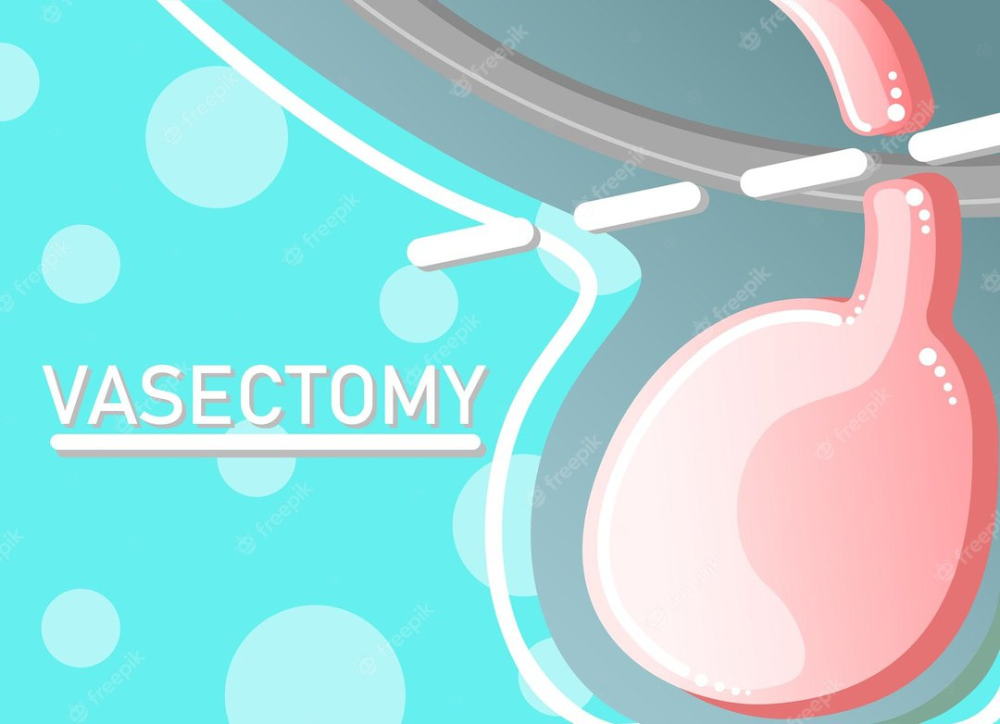

What is Vascotomy?
Vascotomy is a surgical procedure that involves making an incision in the vas deferens, which is the tube that carries sperm from the testicles to the urethra. The purpose of this procedure is to prevent the release of sperm during ejaculation, which can be used as a form of male contraception.
Procedure of vasectomy
Vasectomy is a surgical procedure that involves cutting or sealing the tubes that carry sperm from the testicles to the penis. The procedure is performed under local anesthesia and takes about 30 minutes. Here are the steps involved in a vasectomy:
...
Vasctomy is usually diagnosed through a physical exam and medical history review. The doctor will examine the scrotum and vas deferens to check for swelling or other abnormalities. They may also perform a semen analysis to confirm that there is no sperm in the semen after the procedure. Before the procedure, the doctor may also perform blood tests to check for any underlying health conditions that could affect the surgery. After the procedure, follow-up appointments may be scheduled to monitor healing and ensure that the vasectomy was successful in preventing pregnancy
Beforendergoing a vasectomy, it is important to have a consultation with a doctor or healthcare provider who specializes in the procedure. During the consultation, the doctor will review the patient's medical history and discuss the risks and benefits of the procedure. They may also provide counseling to ensure that the patient fully understands the implications of undergoing a vasectomy, including the fact that it is a permanent form of contraception. Counseling may also address any concerns or questions the patient may have about the procedure, such as how it will affect sexual function or whether it can be reversed in the future. The doctor may also provide information on alternative forms of contraception and help the patient make an informed decision about whether a vasectomy is the right choice for them.If you have any further questions, feel free to ask!
-

- Preparation: The patient is asked to lie down on a surgical table and the area around the scrotum is cleaned with an antiseptic solution.
- Anesthesia: Local anesthesia is administered to numb the area around the scrotum.
- Incision: A small incision is made in the scrotum to access the vas deferens, which is the tube that carries sperm from the testicles.
- Cutting or sealing the vas deferens: The vas deferens is either cut and tied or sealed with heat or a chemical agent. This prevents sperm from reaching the semen that is ejaculated during intercourse.
- Closure: The incision is closed with stitches or surgical glue.
- Follow-up: The patient will need to return for follow-up appointments to ensure that the vasectomy was successful in preventing pregnancy.
Recovery: The patient is advised to rest for a few days after the procedure and avoid strenuous activities for a week or two. Painkillers may be prescribed to manage any discomfort.
Testing and diagnosis of vasctomy
Vasctomy is usually diagnosed through a physical exam and medical history review. The doctor will examine the scrotum and vas deferens to check for swelling or other abnormalities. They may also perform a semen analysis to confirm that there is no sperm in the semen after the procedure. Before the procedure, the doctor may also perform blood tests to check for any underlying health conditions that could affect the surgery. After the procedure, follow-up appointments may be scheduled to monitor healing and ensure that the vasectomy was successful in preventing pregnancy
consultation and counseling of vasectomy
Beforendergoing a vasectomy, it is important to have a consultation with a doctor or healthcare provider who specializes in the procedure. During the consultation, the doctor will review the patient's medical history and discuss the risks and benefits of the procedure. They may also provide counseling to ensure that the patient fully understands the implications of undergoing a vasectomy, including the fact that it is a permanent form of contraception. Counseling may also address any concerns or questions the patient may have about the procedure, such as how it will affect sexual function or whether it can be reversed in the future. The doctor may also provide information on alternative forms of contraception and help the patient make an informed decision about whether a vasectomy is the right choice for them.